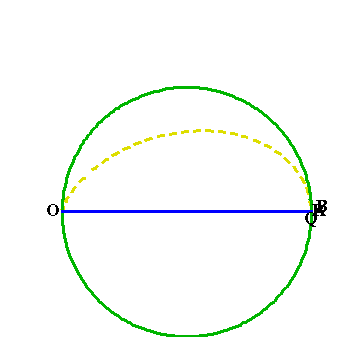
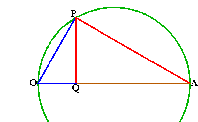
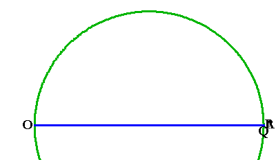
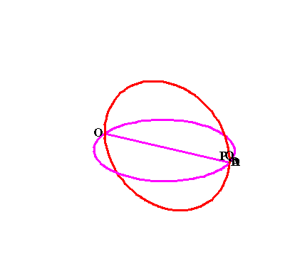
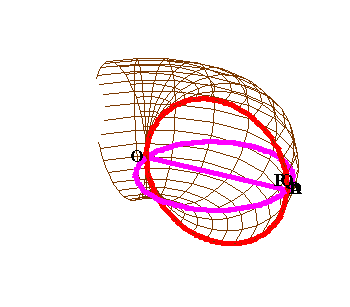
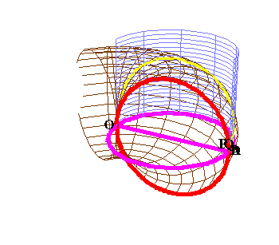
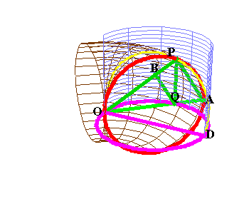
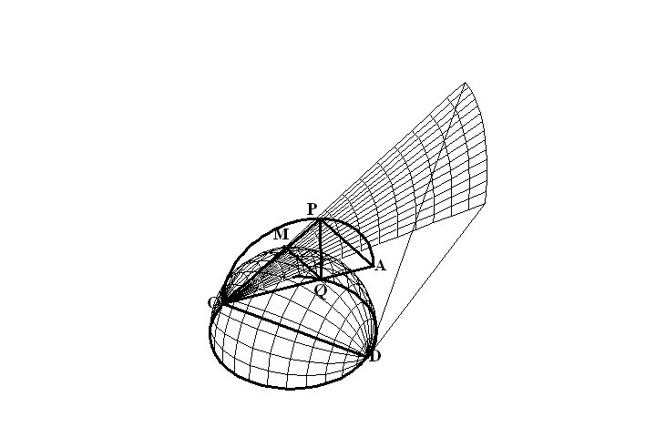

{kind=link}
{kind=link}
{kind=link}
Figure 2

Animation 2

Riemann for Anti-Dummies Part 42
ARCHYTAS FROM THE STANDPOINT OF CUSA, GAUSS, AND RIEMANN
A citizen in 2003 A.D., wishing to muster the conceptual power necessary to comprehend today's historical, political and economic crisis, and to act to change it, will find it of great benefit to bind into one thought, Archytas' construction for finding two mean proportionals between two extremes, (circa 400 B.C.), with Bernhard Riemann's 1854 lecture, "On the Hypothesis which Underlie the Foundations of Geometry". Two thoughts, separated temporally by 2400 years, recreated simultaneously by one mind yours.
The summary of the relevant concept, spoken by the then 28 year old Riemann acting under the tutelage of the 77 year old C.F. Gauss, focuses on the relationship of the idea to that which creates it:
"Accordingly, I have proposed to myself at first the problem of constructing the concept of a multiply extended magnitude out of general notions of quantity. From this it will result that a multiply extended magnitude is susceptible of various metric relations and that space accordingly constitutes only a particular case of a triply-extended magnitude. A necessary sequel of this is that the propositions of geometry are not derivable from general concepts of quantity, but that those properties by which space is distinguished from other conceivable triply extended magnitudes can be gathered only from experience. There arises from this the problem of searching out the simplest facts by which the metric relations of space can be determined, a problem which in nature of things is not quite definite; for several systems of simple facts can be stated which would suffice for determining the metric relations of space; the most important for present purposes is that laid down for foundations by Euclid. These facts are, like all facts, not necessary but of a merely empirical certainty; they are hypotheses; one may therefore inquire into their probability, which is truly very great within the bounds of observation, and thereafter decide concerning the admissibility of protracting them outside the limits of observation, not only toward the immeasurably large, but also toward the immeasurably small."
It must be kept in mind, that Archytas, like Riemann and Gauss, was anti-Euclidean. In fact, even Euclid was more anti-Euclidean than today's neo-Aristotelean followers of Galileo, Newton and Kant, who assert that physical space-time conforms, a-priori, to the axioms, postulates and definitions of Euclidean geometry. No where in Euclid's Elements is such a preposterous assertion stated. Rather, the Elements are a compilation of earlier discoveries that could never have been produced by the logical deductive methods used in the Elements. The actual method of discovery is best indicated when the Elements are read backwards; from the 13th book on the spherical derivation of the five regular solids, to the 10th book on incommensurables, to the middle books on proportions, to the opening sections on the circular derivation of constructions in a plane.
Archytas' magnificent composition could only have been produced by a mind closer to Riemann's than Euclid's, and, having lived and worked nearly a century earlier, we can be assured that his was not constricted by the deductive method of the Elements, let alone its later Aristotelean transmogrifications. The few extant fragments of Archytas indicate his concept of mathematics was far different from today's formalists:
"Mathematicians seem to me to have excellent discernment, and it is not at all strange that they should think correctly about the particulars that are; for inasmuch as they can discern excellently about the physics of the universe, they are also likely to have excellent perspective on the particulars that are. Indeed, they have transmitted to us a keen discernment about the velocities of the stars and their risings and settings, and about geometry, arithmetic, astronomy, and, not least of all, music. These seem to be sister sciences, for they concern themselves with the first two related forms of being number and magnitude."
As with his collaborator Plato, Archytas understood that the betterment of humanity depended on the improvement of the cognitive powers of the mind through pedagogical exercises:
"When mathematical reasoning has been found, it checks political faction and increases concord, for there is no unfair advantage in its presence, and equality reigns. With mathematical reasoning we smooth out differences in our dealings with each other. Through it the poor take from the powerful, and the rich give to the needy, both trusting in it to obtain an equal share."
However, today's responsible citizen need not rely merely on fragmentary quotes to bring Archytas' method into his or her mind. A more secure approach is directly accessible--coming to know for oneself, Archytas' solution for the problem of doubling the cube a method advocated by Archytas himself:
"To become knowledgeable about things one does not know, one must either learn from others or find out for oneself. Now learning derives from someone else and is foreign, whereas finding out is of and by oneself. Finding out without seeking is difficult and rare, but with seeking it is manageable and easy, though someone who does not know how to seek cannot find."
The Polyphonic Determination of Mean Proportionals
To begin to obtain knowledge of Archytas' method, one must throw out all axiomatic/deductive approaches and adopt the physical/geometrical approach demonstrated by Jonathan Tennenbaum in his quite notable pedagogical exercise: "A Note: Why Modern Mathematicians Can't Understand Archytas" That discussion should be throughly worked through and forms an excellent basis for the pedagogical workshops now taking place among youth organizers and others. That argument is summarized here with the aid of some graphics and animations.
To double the cube, Archytas focused on the more general form of the problem posed by Hippocrates of Cios, that of placing two means between two extremes. Hippocrates had recognized that when doubling the square, the areas of the squares produced, as well as the corresponding sides, were all in what the Pythagoreans called "geometric" proportion. A similar relationship held when doubling cubes, but with one notable exception. Instead of one geometric mean between each action, the cube required two.
For example, if we take a square and double its side, the area of the square so produced quadruples. Thus, the square whose area is double, is the geometric mean between the original square and the square produced by doubling its side. That proportion expressed in numbers is 1:2::2:4. This same proportion is reflected among the sides of the three squares. That is, the side of the square of 1 is to the side of the square of two, as the side of the square of two is to the side of the square of four. Or, in numbers, 1:\/2::\/2:2. Thus, doubling a square amounts to constructing the geometric mean between 1 and 2.
However, when the edge of a cube is doubled, the volume of the cube increases from 1 to 8. From the standpoint of whole numbers, there are two geometric means between 1 and 8, specifically 2 and 4. Hippocrates noted that a similar proportionality exists between the edges of these cubes. The problem, as Riemann would recognize it, is extending this relationship outside the realm of visible observation between 1 and 8, into the smaller interval between 1 and 2. The discrepancy between what can be done in the large and with what can be done in the small, is analogous to the idea of a changing geodesic from the macro-physical to the micro-physical domain, and indicates that the doubling of cube is an action of a higher power, as Plato defines power.
The relationship between the problem of doubling the cube and the problem of finding two geometric means between two extremes, can prove a stubborn one to master for those stuck in logical/deductive habits. The root of this mental block is in large part due to the false, but persistent, habit of trying to understand things from the bottom up. While in the domain of squares, the geometric means from one to eight are created one at a time, one, then two, then four, then eight; in the domain of cubes, these two geometric means, must be created all at once from the top down.
Archytas, who understood music, geometry, number and sphaerics (astronomy) as one, would have no more problem with this than J.S. Bach, Mozart, Beethoven, Schubert, Schumann or Brahms. For the well-tempered system of bel-canto polyphony is not produced from the bottom up, note by note. Rather, each note is determined from the relationships that arise from bel-canto sung polyphony. Thus, think of the placing of two means between two extremes in the same epistemological light as a musical composition. The composer's idea of the composition determines the relationship among the notes. The question Archytas solved, was, "What composition produces two geometric means between two extremes?"
As demonstrated in the above cited pedagogical discussion by Jonathan Tennenbaum, the placing of one geometric mean is a function of circular rotation, not the generation of squares. While the doubling of the square requires finding the geometric mean between 1 and 2, the circle expresses the placement of a geometric mean between any two extremes. (See figure 1.) In the figure, triangle OPA is inscribed in a semi-circle making the angle at P a right angle.(fn.1.) A line drawn from P perpendicular to diameter at Q, forms a whole set of geometric proportions. The one that most concerns us here is OQ:OP::OP::OA. As P rotates around the circle from A to O, OP remains the geometric mean between OQ and OA, even though the proportion between OQ and OA changes from 1:1 to 1:0.(fn2.) (See animation 1.)
Figure 1  |
Animation 1  |
As indicated in Jonathan's pedagogical, a second set of geometric proportions can be linked to this first set, by drawing a circle around right angle OPQ and finding B as a projection of Q onto OP. (See figure 2.) This produces the double set of geometric proportions OB:OQ::OQ:OP::OP::OA. Now, as P moves from A to O, not only do the geometric relationships between OQ, OP and OA change, but so do the geometric relationships between OQ, OB and OP. (See animation 2.)
Figure 2 |
Animation 2  |
Think of these sets of relationships polyphonically. OQ:OP::OP:OA is one voice. OB:OQ::OQ::OP is a second voice. The internal relationships within each voice are the same, but together they form a relationship between two sets of relationships, akin to the voices in a two part fugue.
The problem Archytas confronted is expressed by the non-uniform nature of the curve traced by B as P moves around the larger circle. In order to double the cube, there must be some definite way to determine a ratio between OB and OA of 1:2.
Archytas recognized that this could not be determined in what Riemann called a doubly-extended manifold, but rather, was derived from the higher powers associated with a triply-extended manifold.
Archytas effected this by generating the first set of geometric means from rotating one circle (with diameter AO) perpendicular to another (with diameter OD). (See animation 3.) A point P on circle AO connected perpendicularly to a point Q on the circumference of circle OD, produces the geometric relationship, OQ:OP::OP::OA. The action of the rotating circle AO produces a torus. (See animation 4.)
Animation 3  |
Animation 4  |
The rotation of PQ produces a cylinder (See animation 5.) The intersection of the torus and cylinder forms a curve of double curvature, which expresses, from the standpoint of a higher power, the geometric relationships between OQ, OP and OA. Now, when Q is projected to a point B on OP the relationship OB:OQ::OQ:OP::OP:OA is produced. (See Figure 3.)
Animation 5  |
Figure 3  |
From this, the magnitude that doubles the cube can be found by constructing OM as a chord of circle OQD so that it is of diameter OD. (See Figure 4.) Rotate chord OM around the axis OD until it coincides with line OP. This action produces a cone with apex at O and axis OD. P now lies at the intersection of a cone, torus and cylinder. After this rotation, M will coincide with B and the length of OB will equal OM. Consequently, if OB=1, OQ is the edge of the cube whose volume is 2; OP is the edge of the cube whose volume is 4; and OA is the edge of the cube whose volume is 8.
Figure 4  |
The Maximum and Minimum
With the just completed work fresh in mind, step back and ask an elementary question. What universal principle is expressed by the physical characteristic that a doubly extended manifold expresses one geometric mean between two extremes, while a triply extended one requires two? As Plato states in the Timaeus, this is not an abstract question, but one necessary to know in order to understand the real world:
"Now if the body of the One had to come into existence as a plane surface, having no depth, one mean would have sufficed to bind together both itself and its fellow terms; but now it is otherwise; for it behoved it to be solid of shape and what brings solids into unison is never one mean but always two."
A crucial insight can be gained when this question is examined from the standpoint of Nicholas of Cusa's principle of the Maximum and Minimum.
Look back at our initial exploration of geometric means. We discovered that this relationship is expressed by a right angle in a circle. But, there was an underlying assumption that we didn't investigate. What is a right angle? Should we accept some definition, such as Euclid's, that a right angle is that angle formed when two lines that intersect form two angles that are equal? Should we accept the definition of right angle as that angle inscribed in a semi-circle, when such a definition assumes that the sum of the angles of a triangle equals two right angles? As Kaestner and Gauss would later demonstrate, such definitions already assume that the manifold in which the action occurs is characterized by infinite flatness.
Even before Kaestner and Gauss raised these questions, Cusa recognized that such formal definitions never lead to the truth. For Cusa, the truth is the unqualifiedly Maximum, which, in the Absolute, coincides with the unqualifiedly Minimum.
"Therefore, the truth, which is itself the measure of things, is not comprehensible except through itself. And one sees that in the coincidence of the measure and the measured. Indeed, in everything this side of the infinite, the measure and the measured differ according to more or less. In God, however, they coincide. The coincidence of opposites is therefore like the periphery of the infinite circle. The distance of opposites is as the periphery of the finite polygon. Therefore, in theological figures the complement of that which can be known is to know this, namely, that in the infinite the difference of the measure and the measured is in God equality or coincidence. Hence, the measuring is there infinite rectitude. And the infinite circular line is measurable through infinite rectitude. And the measuring itself is the unity or the connection of both."
This method of the maximum and minimum is already implicit in the problem addressed by Archytas. The maximum and minimum coincide in God, but "this side of the infinite" they're opposites. Physical action, can be thought of as least-action, or a mean between the extremes of the minimum and maximum.
As Cusa notes, the circle is generated as the action that encompasses the maximum area by the minimum circumference, otherwise known as "isoperimetric". This action of circular rotation, itself contains a maximum and minimum. If the rotation begins from a point A, then there is some point O at which the rotating point has reached a maximum divergence from A and begins to converge back towards A. Thus, the circle, which is itself a maximum/minimum, contains within it, another maximum/minimum, expressed by the ends of the diameter as points of maximum divergence.
This principle of maximum divergence within a circle, also contains within it, a maximum and minimum. The angle formed by a line pivoting about the center of the circle reaches an angle of maximum divergence, which now defines a right angle, which Cusa calls the maximum acute angle and the minimum obtuse angle. In other words, instead of defining a right angle as a thing, think of it as a maximum/minimum within a circle, which is itself a maximum/minimum within a doubly-extended manifold. It is here, in the nature of the doubly- extended manifold, that the minimum/maximum characteristics expressed by the circle, and in turn, the right angle, are determined.
Thought of from this standpoint, the geometric mean expresses this maximum/minimum relationship of what Riemann would call a doubly-extended manifold. In sum, the circle expresses the maximum/minimum characteristic of a doubly-extended manifold; the right angle, in turn, expresses the maximum/minimum characteristic of a circle. From Cusa's standpoint, the geometric mean can be thought of as the mean between the maximum and minimum right angle, (as illustrated in the in the first animation.)
Thought of in this way, the geometric mean is not produced by squares. Rather, the squares are artifacts, generated by the placing of one geometric mean between two extremes, which is the characteristic least action principle of a doubly-extended manifold of zero-curvature.
Now on to the real world of solids as exemplified by cubes. Cubes express two geometric means between two extremes. From the standpoint of Cusa's maximum/minimum, this relationship must express a mean between the minimum and maximum in what Riemann would call a triply-extended manifold. The expression of the maximum/minimum in a triply- extended manifold is spherical action, which encloses the maximum volume in the minimum surface, and produces two orthogonal degrees of circular action. Each circle expresses a complete set of geometric means. But, the two means that produce solid bodies, such as cubes, are only generated when the spherical action is "unfolded" as in Archytas' construction.
As in the case of the square, the cube does not produce two means between two extremes. Cubes are artifacts generated when two geometric means are placed between two extremes of spherical action, when that action is "unfolded" as in Archytas' composition. This is a characteristic least-action principle of a triply-extended manifold.
Figure 4  |
Kepler's Orbits and the Catenary
Cusa's method of maximum/minimum led to a revolution in scientific thinking as typified by Kepler's determination of the harmonic ordering of planetary motion. The position of any planet within its orbit, Kepler demonstrated, is determined by the minimum and maximum speeds of that orbit. From aphelion the planet increases its speed non-uniformly as determined by the speed it intends to be at when it reaches perihelion, and inversely, from perihelion back to aphelion. Thus, each planet's orbit is a type of mean between these two extremes. Kepler further showed that these intra-orbital extremes when thought of together, form a set of means, as expressed by the musical harmonic relationships among them.
Similarly for Leibniz' principle of the catenary. As both he and Bernoulli showed, the catenary unfolds its "orbital" pathway from its lowest point, which is the only point that holds up no chain. From a physical standpoint, the catenary is a mean, a least-action pathway, between the maximum potential force and minimum potential force, which are exerted at right angles to each other. This example will rankle anyone stuck in a Cartesian coordinate system, where the horizontal and vertical axes are straight-lines, and the mean between them is just another straight-line at a 45 degree angle to both. In Leibniz' physical geometry, the vertical and horizontal are the potential maximum and minimum of physical action, and the catenary is the least action pathway between these two extremes.
Freed, now, from the "ivory tower" notions of Euclidean geometry, as Archytas was, we can gain a greater comprehension of the expression of Cusa's principle of the maximum/minimum in the Gauss/Riemann complex domain. This is where we'll begin in the next installment.
FOOTNOTES
1. This should not be taken for granted, and so the reader is encouraged to discover a demonstration that an angle inscribed in a semi-circle is a right angle. The original proof of this is attributed to Thales. The proof in Euclid, III. 31, is based on Euclid's earlier proof that the sum of the angles of a triangle is equal to two right angles, which Kaestner, Gauss and Riemann would later note depends on the parallel postulate, which in turn depends on an assumption about the nature of the curvature of space. As, Riemann noted in his 1854 habilitation lecture, "these facts are, like all facts, not necessary but of a merely empirical certainty; they are hypotheses;"
2. Here we confront another paradox of abstract mathematics between the expression of the geometric mean in numerical terms, and its physical geometric expression.
{kind=link}
{kind=link}
{kind=link}
{kind=link}